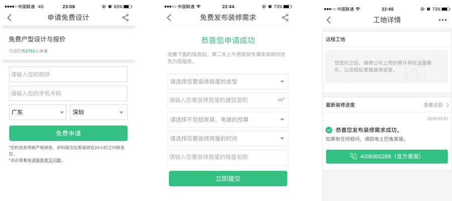

下面是我做的一份关于互联网家装的竞品分析，最后有彩蛋哦，希望有个面试机会！
竟品选择：
| 齐家网 |
土巴兔 |
爱空间 |
| 市场霸主，D轮融资1.6亿美元，老牌o2o平台型公司 |
知名度高，小白装修必备软件，装修资讯、装修日记做得好，平台型企业。 |
699元/㎡，20天完成装修，自有装修工人，自营型企业。 |
| 入选条件：以上公司包括了平台模式和自营模式，是目前互联网家修发展得比较好的公司，除了自身业务运营得好，背后还有资本支持。 |
1.战略层面：产品定位及优势对比
| 齐家网 |
土巴兔 |
爱空间 |
| 产品定位 |
专注于装修、建材、家居垂直领域的电子商务平台，通过O2O模式和互联网技术为网络家装用户提供产品和家装服务。 |
让天下没有烦心的装修，强大的品牌整合了家装上、中、下游全产业链贯通的家装平台。 |
小米式低价撬开市场，讲究“快”、“省”、“好”的极致体验，还提供旧房改造服务。类似于京东模式。 |
| 优势 |
资深家装品牌，资本充足，投资4亿入股海鸥卫浴布局供应链。 |
精心耕作的信息资源积累和用户口碑，用户分享的装修日记成了土巴兔核心内容之一。 |
低价能够快速获得市场，自有产业工人，对产品和服务有极高的控制力。提供旧房改造。 |
| 玩法 |
免费预约设计方案，提供三套设计方案供选择，方案可以一直改到满意为止。，然后在线报价，选择装修公司。或者选择热门装修方案。 |
免费测量，免费设计，免费报价，挑选最优设计，土巴兔提供装修保障：满意后付款，第三方质检，快速维权。免费验房。 |
免费设计，免费测量。八大一线主材品牌。新房一口价699元/m²，旧房119+699元/m²。 |
2．范围层：功能
主要对比移动端下单流程：
齐家网
齐家网不用注册直接进入页面，不用注册也可以下单，对于不懂互联网的用户，或者怕麻烦的用户有很大的好处。
土巴兔

点开APP，必须注册登录才能看见里面的内容，但可以选择微信登录。
爱空间
不注册可以查看内容，但是要下单必须注册，一个页面内容，但填写的内容居多，因为是自营，防止恶意下单，需要先支付1000元。
总结：齐家网点开APP可以浏览内容，无需注册也可以下单。土巴兔点开APP必须注册登录，可以选择微信登录，登录之后才能查看内容。爱空间下单必须注册。齐家网和土巴兔注册页面都是两个，每个页面的要填写的内容差不多。爱空间虽然只有一个注册页面，但是要填写很多，在移动设备上给人压力，用户体验不好，这一点齐家网和土巴兔的用户体验好一点。
APP底部菜单栏布局
齐家网、土巴兔底部菜单栏五列布局，最中间的都是自己的核心优势，齐家网做建材出身，所以对于建材这方面有很多经验。土巴兔的核心竞争力是用户的口碑，用户喜欢把自己的装修经验分享到平台来。所以中间是装修日记。爱空间底部菜单栏是四列布局，爱空间的优势是全网最低的价格，性价比高，突出自营的施工队伍，能够保证施工质量。
3.结构层：框架
总结：齐家网把家装商城放在首页二级入口处，不是很明显，相反土巴兔把商城放在底部一级菜单。从结构上看，每个公司都是把最核心的竞争放在了底部菜单，齐家网做建材起家，希望把卖建材积累的客户能够转化为家装客户。土巴兔最核心的是口碑传播，希望通过装修日记的方式让用户使用土巴兔的服务。爱空间突出了自营。
4.框架层
交互表现
- 三个APP首页都是采用目前流行的tab标签切换导航，齐家网首页推荐了很多商品，首页比较臃肿，给人压迫感。土巴兔首页除了相关业务模块以外，就是装修知识，装修日记。爱空间因为自营的模式，页面简洁明了。
- 土巴兔和爱空间除了左上角返回按钮，还可以向右滑动返回，齐家网则没有向右滑动返回。
- 每个公司都把自己核心竞争的内容放在最显著的位置。
5.表现层
齐家网品牌 VI给人感觉是老练，稳重，但是不符合互联网气质。土巴兔的品牌 VI是所有互联网装修中做的最好的，绿色调 + 安全帽兔子的形象，有点三只松鼠的味道。爱空间的品牌 VI给人的感觉是家装中的“小米”。
7.总结
中国互联网家装市场行业趋势
国家互联网+战略成为重要的驱动
- 家装能带动智能家居、家电、家政、亲子消费、等领域的家庭消费，相关产业链十分丰富。
- 家装消费通常采用预付制度，能够给家装企业带来良好的现金流，为开展供应链金融提供资金基础。家装企业在产业链中处于核心位置，具有产业链整合的优势，既可以面向消费者提供家装贷款服务，也可以面向上下游产业链厂商开展金融服务。
O2O模式能提供更强大的服务
- 装消费最终需要在线下完成，其特点包括购买前体验极其重要、服务质量极为关键、本地化要求极高，因此单纯的 B2C或 C2C模式并不能很好地满足用户对线下服务的需求。
- O2O模式则将线下服务与互联网有机结合在一起：线上为家装企业引流，为消费者提供透明化、标准化的商品信息，同时提供便捷的预约、支付、评价等服务；线下则为消费者提供非标准化的产品和服务，满足消费者重体验重服务的需求。因此 O2O 整合了传统家装与互联网的优势，又规避了二者的不足，能为家装消费者提供更强大的服务。
中国互联网家装市场面临的问题和挑战
家装行业的低频次消费导致用户粘性成为问题
- 家装行业具有低频次、高客单价的特点，仅提供家装服务的单一产品模式使得互联网家装用户在消费结束之后流失严重，缺少用户粘性使得家装平台的可持续性盈利能力受到较大挑战。
装修质量与产能之间的两难问题
- 家装服务涉及到验房、设计、施工、验收等环节，整个工期较长，必然影响到家装企业的产能扩张速度。装修工期本身与装修质量强相关，缩短工期可能会影响装修质量及用户体验；但如果将所有环节标准化以此扩大产能，必然又会加大成本投入。装修质量与产能之间的两难问题对整个供应链管理及人员管理带来较大挑战。
对于做产品的优势：
- 热爱互联网，每天花很多时间在上面获取信息。
- 执行力强，对产品有强烈的责任心，自我驱动。
- 喜欢思考，对热点敏感，公司第一个H5的砍价活动，受到高德加油卡游戏启发，我负责H5逻辑的交互，活动页面，对接开发和平面设计，完整的参与了整个活动。
下面是我对于一些热点和产品结合的思考，我出思路，对接设计师。 （微软的人脸识别热点时事和WIFI音乐蛋的结合） （北京沙尘暴和我们公司WIFI音箱结合图片） 大白电影和公司WIFI移动电影、WIFI音乐盒结合的GIF图片